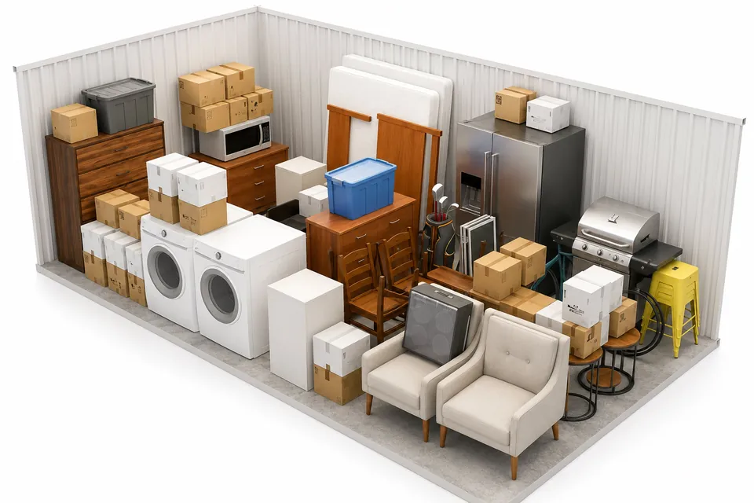

How to Choose the Right Storage Unit Size
Every size and price at our Hutchinson and South Hutchinson locations, and what fits in each.

Reno County Storage has two locations on opposite sides of the Arkansas River, and they don’t carry the same units. Four sizes are offered at both, six are offered at only one, and the shared sizes cost less in South Hutchinson. So the right unit depends on what you are storing and on which lot has the size you need. This guide lists every size, what it holds, and what it costs each month.
Every Size and Monthly Price, by Location
Hutchinson, 2511 E 17th Ave
- 5×10: $65
- 8×10: $85
- 10×10: $95
- 10×15: $105
- 10×20: $125
- 10×25: $145
- 10×30: $155
South Hutchinson, 712 N Walnut St
- 5×10: $55
- 10×10: $65
- 10×15: $75
- 10×20: $105
- 15×30: $190
- 15×40: $250
- 20×40: $350
These are the regular monthly rates at the time of writing. Rates can change and units fill up, so check current rates and availability before you plan around a number. Every unit at both locations is drive-up, ground level and insulated, with a roll-up door. Neither location has climate-controlled units.
Which Sizes Exist at Only One Location
- Hutchinson only: 8×10, 10×25 and 10×30.
- South Hutchinson only: 15×30, 15×40 and 20×40.
- Both: 5×10, 10×10, 10×15 and 10×20.
For the four shared sizes, South Hutchinson is cheaper every time: $10 a month less on a 5×10, $30 less on a 10×10 or 10×15, and $20 less on a 10×20. One comparison is worth a second look. A 10×10 in South Hutchinson costs $65, the same as a 5×10 in Hutchinson and $20 less than Hutchinson’s 8×10. If you live on the south side or don’t mind crossing the river, you get twice the floor of a 5×10 for the same money.
The Hutchinson lot has a perimeter fence with gated entry. If that matters for what you are storing, it can be worth the difference in rent. Both locations have cameras recording around the clock, which we cover in our security guide.

Household Storage: Match the Unit to the Home
- A dorm room or a closet’s worth: 5×10. About the size of a walk-in closet. It takes a mattress and box spring, a dresser, boxes and a couple of bikes. This is the usual pick for a HutchCC student storing over the summer.
- A studio apartment: 8×10. Hutchinson only. In South Hutchinson, go to the 10×10.
- A one-bedroom apartment: 10×10. Sofa, dining set, bed, washer and dryer, plus boxes.
- A two-bedroom apartment: 10×15.
- A two- or three-bedroom house: 10×20. The footprint of a one-car garage.
- A three-bedroom house: 10×25. Hutchinson only.
- Four bedrooms or more: 10×30 in Hutchinson, or the wider 15×30 in South Hutchinson.
Those matches assume you pack the unit tight and don’t need to get back in often. If you will be in and out, for example swapping seasonal gear or pulling tools during a renovation, leave an aisle down the middle. An aisle usually costs you one size.
Cars, Boats, RVs and Work Equipment
Because every unit is drive-up, vehicles and trailers go straight in through the roll-up door. Size by total length, not by what the title says. Measure a boat on its trailer from the tip of the tongue to the back of the motor.
- 10×20 (both locations): a small vehicle or a motorcycle.
- 10×25 (Hutchinson): a boat.
- 10×30 (Hutchinson): a boat, a car or large equipment.
- 15×30 (South Hutchinson): a boat or large vehicle, or heavy equipment that needs the extra width.
- 15×40 (South Hutchinson): more than one vehicle, a large RV, or a contractor’s equipment.
- 20×40 (South Hutchinson): the largest unit we rent. Several large vehicles or warehouse inventory.
For anything tall or wide, call (620) 662-7336 with your measurements before you reserve, so we can confirm it clears the door.

Stuck Between Two Sizes? Look at the Price Step
At the Hutchinson location, each step up the list adds $10 or $20 a month. From 10×10 to 10×15 is $10. From 10×15 to 10×20 is $20. When the gap is that small, take the larger unit if you are unsure. A unit you can walk into is easier to live with than one you have to unload to reach the back.
South Hutchinson is the same through the 10×15, with $10 steps. Then the gaps widen: $30 up to the 10×20, and $85 from there to the 15×30. Above a 10×20, measure before you commit.
Three checks settle most decisions:
- Your longest item. A sofa or a king mattress can stand on end. A canoe or a ladder can’t, so it sets the minimum depth.
- How often you will visit. Load once and leave it, and you can pack floor to ceiling. Visit monthly, and you need that aisle.
- What is still coming. If the garage and the patio furniture are joining the load next month, size for the full pile now.
Renting is month-to-month at both locations, with no long-term contract, so a wrong guess isn’t permanent. Active duty military, veterans and first responders get 15% off any size.
Frequently Asked Questions
What size storage unit do I need for a 2-bedroom apartment?
A 10×15 holds a typical two-bedroom apartment. If you also have garage contents or want a walkway inside the unit, move up to a 10×20. At Reno County Storage a 10×15 is $105 a month in Hutchinson and $75 in South Hutchinson at the time of writing.
How much does a 10×10 storage unit cost in Hutchinson, KS?
At the time of writing, a 10×10 at Reno County Storage is $95 a month at 2511 E 17th Ave in Hutchinson and $65 a month at 712 N Walnut St in South Hutchinson. Rates can change, so check the locations section of the website for the current price.
Can I store a car or a boat in a storage unit in Hutchinson?
Yes. All units are drive-up with roll-up doors. A 10×20 fits a small vehicle or motorcycle, and a 10×25 or 10×30 in Hutchinson fits a boat or a car. For large vehicles and RVs, the 15×30, 15×40 and 20×40 units are at the South Hutchinson location.
What is the largest storage unit at Reno County Storage?
The largest unit is a 20×40 at the South Hutchinson location, 712 N Walnut St, at $350 a month at the time of writing. It holds several large vehicles or warehouse inventory. The largest unit at the Hutchinson location is a 10×30.
What happens if I rent the wrong size storage unit?
You aren’t locked in. Rentals at Reno County Storage are month-to-month with no long-term contract. You can rent a different size online and give notice on the first unit before the end of the month.
The size guide walks through each unit visually. When you have picked one, you can rent online at Hutchinson or South Hutchinson, or call (620) 662-7336 and we will help you choose.
More from the Blog

5 Things People Forget When Renting a Storage Unit
Avoid common mistakes with these practical storage tips for first-time renters.
Climate Controlled vs. Regular Storage: Do You Really Need It?
When climate-controlled storage is worth the premium and when a standard drive-up unit is the smarter choice for your belongings.

Why Self Storage Makes Moving Easier
Step by step: staging a home for sale, covering a closing-date gap, and loading a unit in the right order.